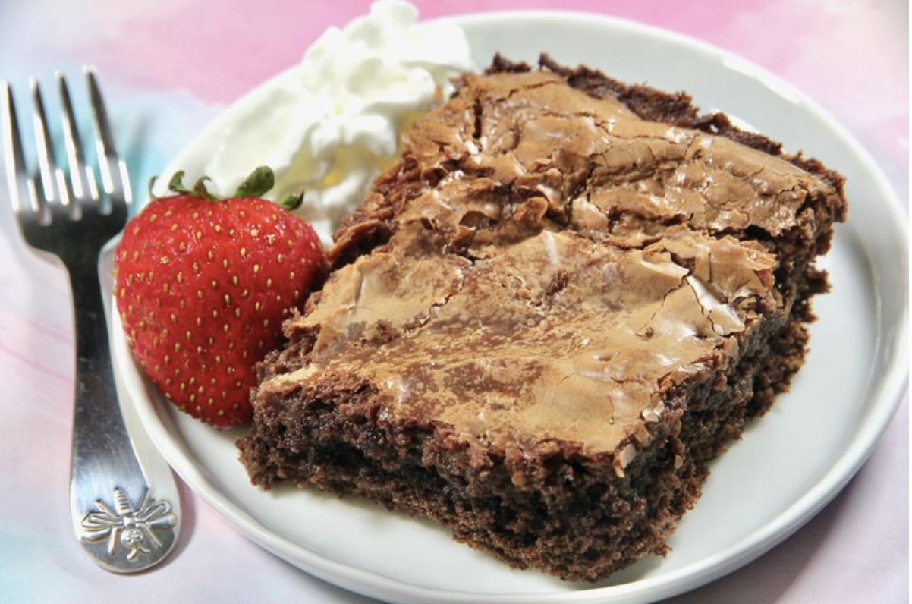

Choco Cake
Home

Image Credits: AllRecipes
Description
This recipe will yield a gooey chcolate butter cake. It only has a few steps and can be served with fruits, powdered sugar, and whipped cream.
Ingredients
- 15.25 oz chocolate fudge cake mix
- 0.5 cup melted salted butter
- 4 eggs, divided
- 1 tsp vanilla extract
- 8 oz softened cream cheese
- 5 tbsp cocoa powder
- 4 cups powdered sugar
- Preheat the oven to 350 degrees F (175 degrees C). Grease a 9x13-inch baking pan.
- Mix cake mix, butter, 2 eggs, and vanilla extract in a bowl. Pat into the prepared pan.
- Mix cream cheese, cocoa powder, and remaining eggs together in another bowl with an electric mixer. Beat in powdered sugar slowly. Pour over cake layer in the pan.
- Bake in the preheated oven until a toothpick inserted into the center comes out clean, about 45 minutes. Let cool.
Recipe Credits: AllRecipes